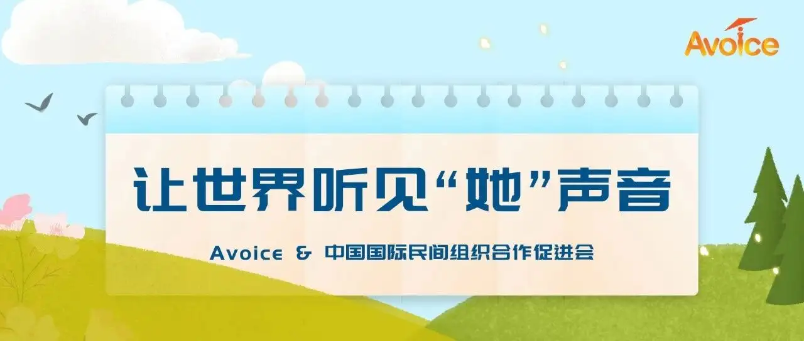
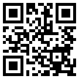
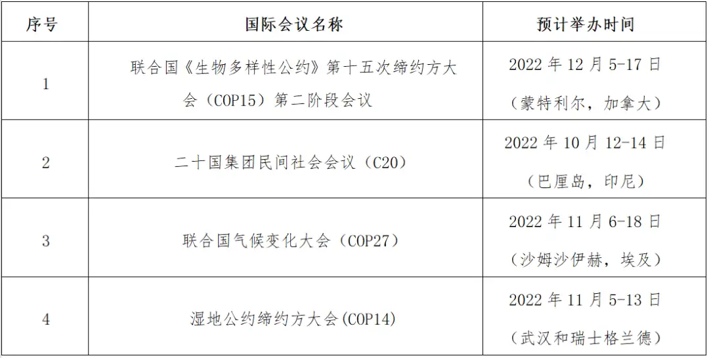

引言：
中国民促会与环境资助者网络（CEGA）、万科公益基金会于2022年共同发起CEGA环境公益“她”项目（包含三个版块，版块一“她”论坛；版块二“她”声音；版块三“她”故事），旨在通过交流学习，赋能环境公益领域女性，推动女性领导力发展。
目前“她”声音拟公开招募环境公益领域优秀女性，支持她们参加环境保护、生物多样性保护、气候变化、妇女发展和可持续发展等议题的国际会议和活动，分享中国经验，传递中国声音，促进中外民间交流。
“她”是谁？
1、国内环境公益领域的优秀女性；
2、关注环境保护、生物多样性保护、气候变化、妇女发展和可持续发展等议题。
“她”能收获什么？
1、CEGA“她”声音根据申请者不同的参会方式确定其资助金额，并在会后以报销的形式给予支持。获资助者将获得5000元以内的资助金额用于参会或发言。
2、 “她”通过参与国际会议和活动，在更大的舞台上传递中国声音、女性声音，提升女性领导力，收获在环境公益领域宝贵的发声和参会经验，个人得到赋能。
“她”需要做什么？
1、瞄准一个想参与的国际会议，准备个人资料，扫描下方二维码并提交申请资料。对于入选者，项目团队将通过电话或邮件形式通知结果；
2、获资助者需要接受项目相关管理要求和财务要求，按计划参会并落实参会任务；
3、获资助者需要在参会后30日内，通过视频记录剪辑、视频感悟录制、撰写报告或提供绘画/照片制作集锦（非仅仅提供照片）等任何形式向项目团队提交参会成果；
4、有意愿参加项目后续分享沙龙活动。
申请周期是什么？
1、申请时间：2022年9月-2023年5月
2、申请要求：申请者需要在参加国际会议/活动的前一个月线上提交申请表，经由“她”项目团队审核后，于提交申请表10个工作日内答复申请情况。
备注：资助金额有限，请有意者尽快申请，满额即止。

请扫码填写并提交申请资料
申请者可参考下方国际会议清单，可申请的会议包括但不限于以下示例，申请者可根据自身了解的会议情况申请即可。

申请及提交材料过程中如需帮助请联系米想想
电话：18610925018；
主办方
环境资助者网络（CEGA）
联合主办方
中国国际民间组织合作促进会
万科公益基金会
平台支持
基金会中心网
中华环保联合会
联合传播伙伴
中国公益时报
中国网
文章内容｜中国国际民间组织合作促进会
排版 I 戴翰林
Avoice海外华人女性保护项目介绍链接